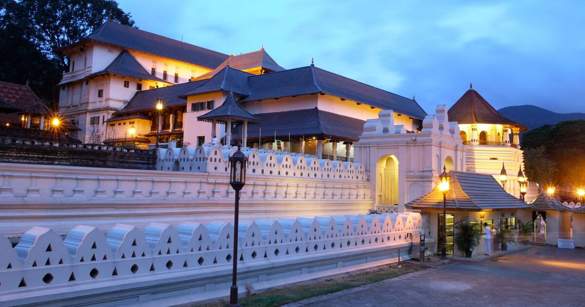
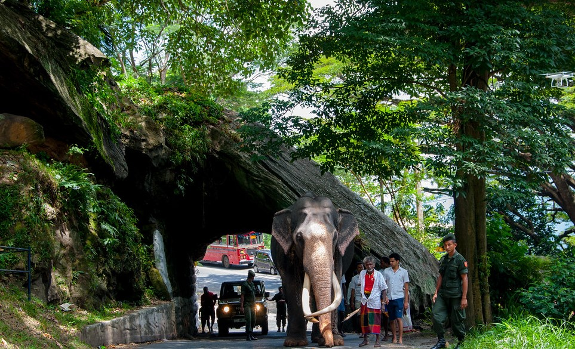
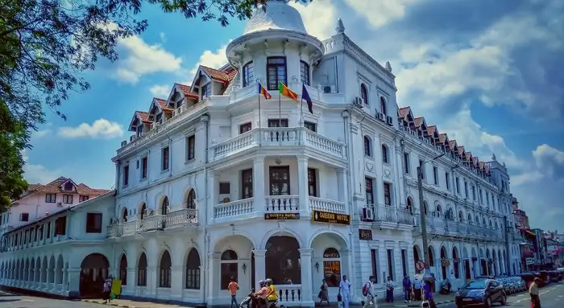

|
Kandy, the cultural capital of Sri Lanka, a World Heritage Site sits pretty in a valley
surrounded by rings of mountains, 115km away from the seaport of Colombo. Right in the heart
of the city center of Kandy is the man-made lake called Kiri Muhuda (Sinhala: the sea of milk),
the one and only decorative lake in Sri Lanka. All other thousands of man-made reservoirs in Sri
Lanka are developed primarily for the purposes of irrigation, and secondarily for the purposes
of general use and wildlife conservation.
Built in the medieval era, the lovely lake is encircled by a short white-washed parapet called Valakulu Bamma (Sinhala: Embankment of clouds) with the pedestrian pavement and motor road running next to the parapet. In the center of the lake is an Island. Southwestern corner of the lake makes way- a just a few steps - to the garden of the Temple of the Tooth. Udawattakele Bird Sanctuary with its densely wooded green hills looms over the red tile roofs and golden canopy of the Temple of the Tooth. Located within the courtyard of the Temple of Tooth are Tourist Office and Cultural Triangle Office. Kandy is home to a multitude of medieval Buddhist temples. Great Kandy Esala Perahera Pageant, the yearly grand homage-rainmaker celebration in exposition of Tooth Relic of Buddha around the city is one great methodical riot of fire, light and sounds of fire play dancers, drummer dancers, dancers, drummers, piper dancers, pipers and caparisoned elephants. |
 |
|  | |
|  |